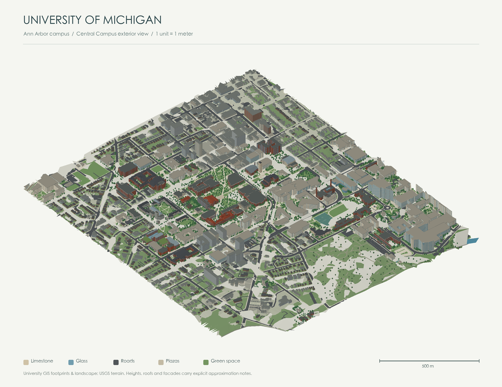

The model, rendering engine and preview are embedded in this HTML. Open it directly in a browser without an internet connection. WebGL 2 is required for interaction.
Scale: 1 unit = 1 meter. Footprints are georeferenced public map data. Selected landmark heights come from published university or project sources. Historical municipal heights are estimates. Other heights, roofs, facade openings and tree shapes are approximate. Roads and outdoor surfaces follow mapped areas. Ground follows sampled USGS 3DEP terrain with simplified building pads; model Z = 0 corresponds to 225 m in the DEM datum. This is an independently made exterior study model, not an official BIM or a certified survey.
English is the default. Use the language button to switch to Chinese; manual choices are remembered when browser storage is available.
Surrounding Ann Arbor buildings and landscape are shown by default. Turn off ⁺Campus neighboring areas in All to show the campus alone.
Sources: University map · University architecture · USGS terrain · © OpenStreetMap contributors · ODbL.
3DS model (.gz) · Layered Rhino model (.xz)
JavaScript is required for the interactive 3D viewer. The campus preview and building directory are available below. Download 3DS · Download Rhino model.